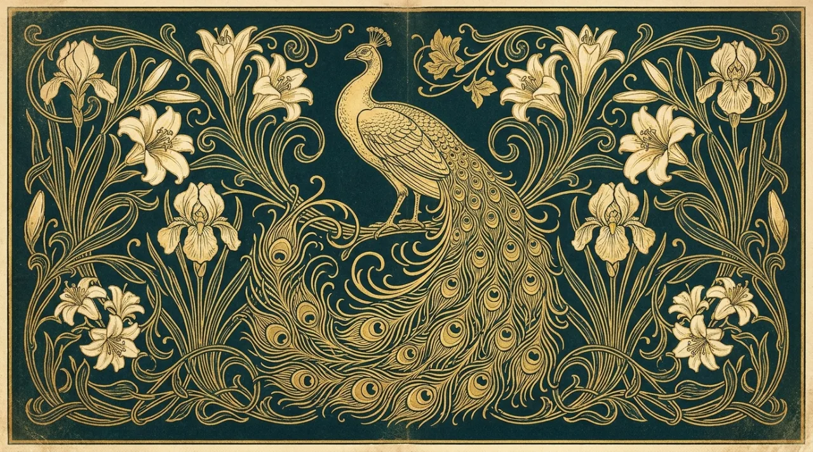
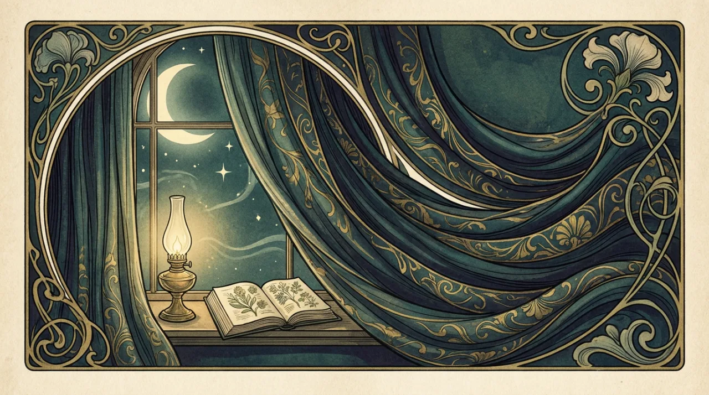
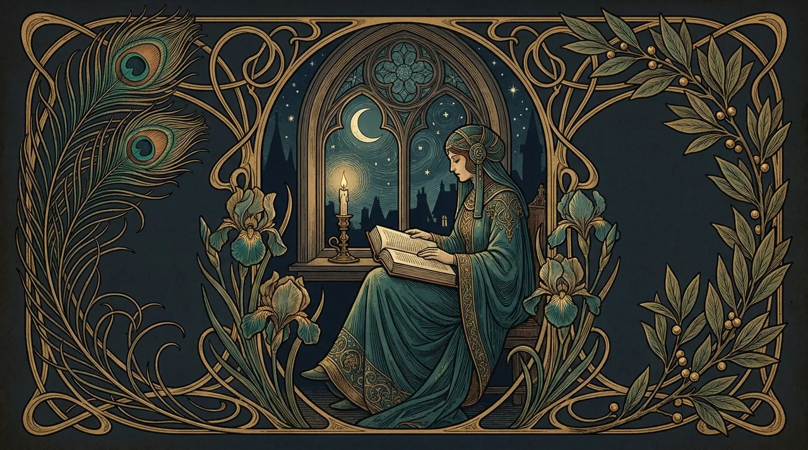
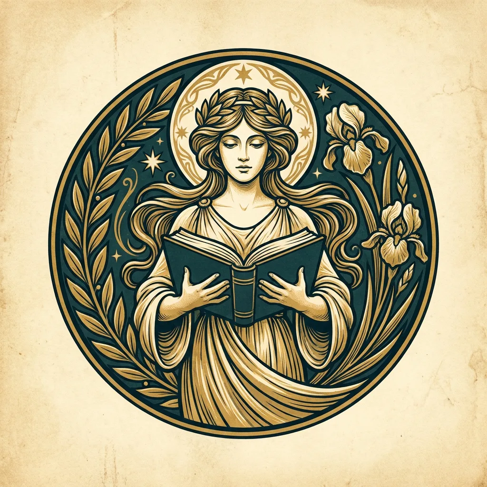

Featured · 本期精選
三篇值得在夜裡細讀的長文
從一場改變印刷史的藝術運動,到人類與黑夜的閱讀記憶——本期我們挑選了三篇文章,適合配一盞燈、一杯熱飲,慢慢讀完。

專文 · 藝術史十九世紀末,一群藝術家把鞭索般流動的曲線帶進海報、書籍與日常。我們重訪那段讓「插畫」第一次登堂入室的年代。
繼續閱讀 →
專文 · 閱讀文化從油燈、蠟燭到電燈,光照的每一次革命都改寫了我們的閱讀習慣。一部關於黑夜、燈火與書頁的小小文化史。
繼續閱讀 →
專文 · 隨筆凌晨三點到黎明之間,被稱為「狼之時刻」。為什麼最深的靈感,總在世界沉睡的那幾個小時悄悄降臨?
繼續閱讀 →Columns · 三個欄目
夜讀固定以三個欄目陪你度過長夜:深入的專文、靜靜欣賞的插畫,以及隨手寫下的夜讀隨筆。
關於文學、藝術與設計史的長篇書寫,適合在不被打擾的夜裡慢慢消化。
紙上美術館,每期精選一組裝飾插畫與圖案,談線條、構圖與它們的時代。
編輯在燈下的零碎筆記:一句話、一段引文、一個關於書的小發現。
Our Voice · 編輯精神
A Quiet Resistance
在一個訊息以秒計算的時代,我們刻意選擇了夜——一段允許文字慢慢沉澱的時間。夜讀不追逐熱點,只整理那些值得反覆閱讀的內容,並以新藝術運動的裝飾語彙,為它們配上一副耐看的容器。
每一期,我們都在問同一個問題:當燈亮起,你想讀些什麼?
關於夜讀
Subscribe · 訂閱長夜
留下電子郵件,每月一封——我們把當期專文與插畫,寄到你最安靜的那段時間。